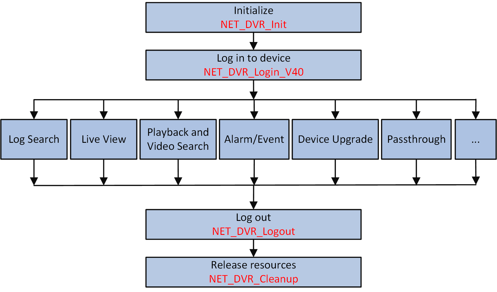

The general integration applications of SDK based on text protocol includes log search, live view, playback, video search, alarm/event, device upgrade, protocol transmission, and so on.

Figure 1 Overall Progress of Integrating Based on Text ProtocolBefore and after integrating each application, the initialization, login, logout, and releasing resources are required.
For the integration progresses of supported applications based on text protocol, refer to Start Live View Based on ISAPI Protocol, Start Playback, Search Video Files by Time, Receive Alarm/Event in Arming Mode, Receive Alarm/Event in Listening Mode, Remotely Upgrade Device, Search for Logs, and Integrate by Transmitting Text Protocol.